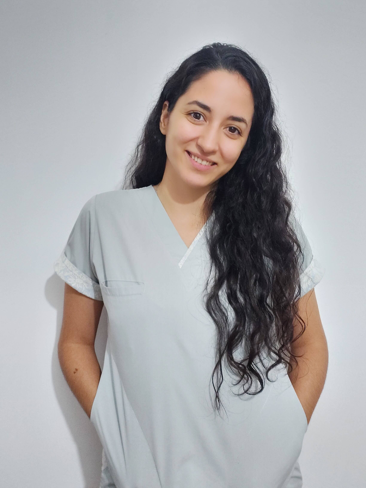
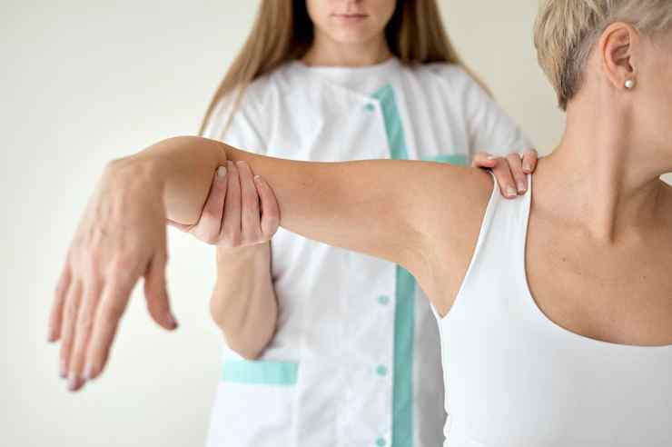

Mayra Daniela Chiotta
Lic. en Kinesiología y Fisioterapia - UNC
MP 579
Cursos realizados
- - Formación Base en Rehabilitacion Postural Global | Método Souchard - Realizado en Asociación Argentina de RPG - CABA (2021).
- - Diplomatura en Prevención de Lesiones y Readaptación Deportiva - Universidad Gran Rosario (2021).
- - Rehabilitación Vestibular y del Equilibrio - Formación a cargo de Lic. Mariano Agiló (2021).
- - Curso intensivo de TERAPIA MANUAL APLICADA A EXTREMIDADES - A cargo del Lic. David García en Paraguay (2019).
- - Curso anual de Neurorehabilitación - Dictado por Lic. Diego Uberti en Neuroability, Ciudad de Córdoba (2018).
Programa de atención 100% personalizado
"La propuesta es que cada paciente tenga una evaluación realizada por un profesional idóneo/a previa al tratamiento, en la cual se pueda llegar a un diagnóstico kinésico certero, y se planifique un tratamiento personalizado. El objetivo del mismo será que ambos, paciente y terapeuta, formen parte activa en el proceso de rehabilitación."
